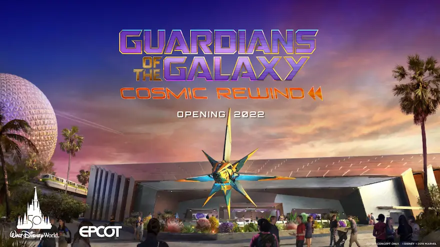

By Valentina
3 Gennaio 2022
Oggi vi voglio parlare di cosa è in programma per Walt Disney World nel 2022, tutte le date da tenere a mente nel caso stiate pensando di passare le vostre vacanze oltreoceano.
Partiamo da qualcosa che già sappiamo, per tutto il 2022 si continuerà a festeggiare il 50esimo del Walt Disney World Resort. Le celebrazioni sono iniziate il 1 ottobre 2021 e continueranno per ben 18 mesi, coprendo quindi interamente quest'anno. Ciò significa che avremo ancora tutti gli eventi di cui abbiamo già parlato: dagli spettacoli speciali ai simboli dei parchi illuminati per l'occasione, tantissimo merchandise che continua ad essere presentato praticamente ogni settimana, cibi speciali, e tanto tanto altro. Dunque anche se non siete potuti essere nei parchi nel giorno del compleanno vero e proprio, ci sarà la possibilità di celebrare la ricorrenza ancora per molto molto tempo.
Ma vediamo nello specifico cosa ci riserva il calendario 2022: Gennaio come di consueto è il mese delle maratone. Se pianificate una visita nei parchi durante gennaio o inizi febbraio, tenete sempre un'occhio al calendario delle maratone perché ce ne sono davvero tante e i resort tendono a riempirsi parecchio per questi eventi. Penso che in futuro dedicherò un episodio a RunDisney perché penso sia una cosa molto interessante e se ci sono dei runners tra di voi, sicuramente saranno informazioni utili.
Il 14 Gennaio apre il Festival of the Arts ad EPCOT - come sappiamo, EPCOT non sta mai troppo tempo senza un festival e il Festival of the Arts è sempre il primo dell'anno, inaugurando il calendario di EPCOT. Come il nome suggerisce, questo festival vuole celebrare le arti: pittura, arti performative e chiaramente tanto tanto cibo nei chioschi del parco. Ci sono esibizioni musicali, una serie di eventi ispirati ai musicals di broadway, artisti locali espongono i loro lavori, che si possono anche acquistare, ci sono attivitá per grandi e piccini dedicate alle arti, la pittura e il disegno, e tante altre attivitá chiaramente legate anche al cibo. Il festival come ho detto inizierá il 14 gennaio e durerà fino al 21 Febbraio.
Il 1 Marzo è la data che tutti stanno aspettando, sarà infatti il primo viaggo virtuale del Galactic Starcruiser, l'hotel, crociera e quant'altro tutta dedicata a Star Wars di cui abbiamo parlato abbondantemente anche nel 2021.
Marzo è anche solitamente il mese in cui il secondo festival di EPCOT inizia: il Flower and Garden festival, tutto dedicato alla primavera e ai fiori, di solito inizia già dalla prima metà del mese. Per quest'anno le date precise non sono ancora state rivelate, ma lo saranno presto e sicuramente ne parleremo nel podcast.
Aprile
il 22 Aprile si festeggia il giorno della terra ad Animal Kingdom. Il giorno della terra è una giornata che viene celebrata a livello internazionale per supportare progetti ecologici ed esiste dal 1970. Tra l'altro, per chi non lo sapesse, Animal Kingdom venne aperto proprio il 22 aprile del 1998 e dunque ogni 22 aprile si festeggia anche il compleanno del parco. Quest'anno Animal Kindgom compirà 24 anni. Di solito in quella data ci sono eventi speciali dedicati al giorno della terra che cambiano di anno in anno, come per molti altri eventi, poco è stato fatto nell'anno appena passato ma ci aspettiamo sicuramente qualche sorpresa per quest'anno.
Maggio
Il 4 Maggio l'attenzione invece si sposterà sui Disney's Hollywood Studios per una ricorrenza che è nata in realtà al di fuori dei parchi e al di fuori di Disney ma che DIsney furbamente ha iniziato a promuovere e valorizzare. Se siete fans di Star Wars avrete già capito, sto parlando di May the Fourth, anche detto Star Wars Day. Negli anni passati Disney ha organizzato diversi eventi in questa data, salvo anno scorso quando per evitare assembramenti a Galaxy's Edge, l'evento non è stato promosso. Questo chiaramente non ha scoraggiato i fans di Star Wars, tanto che le prenotazioni per questo parco sono andate esaurite e non mi stupirei se a breve anche le prenotazioni per quest'anno saranno esaurite. Se avete in mente di essere ad Orlando all'inizio di Maggio, tenete a mente questa data perché sarà una data calda per gli studios.
Fine Maggio - Guardians of the Galaxy Cosmic Rewind - occhi aperti per le date precise, che devono ancora essere annunciate!
Luglio
A Luglio inizierà il terzo festival della stagione ad EPCOT, il Food and Wine Festival, che di solito è il più lungo e quello che si focalizza ancora di più, se possibile, sul cibo e i drinks da tutto il mondo. Le date certe per il festival non sono ancora state annunciate, di solito si tratta di metà luglio, e anche questo è da tenere a mente per un'eventuale vacanza a Walt Disney World perchè i primi giorni di questo festival attraggono di solito molta molta molta gente, soprattutto locals ma non solo, e dunque EPCOT diventa una zona calda. C'è da dire che la maggior parte delle persone che visitano EPCOT per il festival non sono particolarmente interessate alle attrazioni, ma se volete vedere il parco in pace e tranquillitá, il consiglio è di evitare sempre i primi giorni - come poi anche gli ultimi, a dire il vero, di questo festival. Appena usciranno le date precise, chiaramente vi terrò informati.
Settembre
Il 9, 10, 11 Settembre si terrá il D23 Expo - l'evento biennale che di solito svela i progetti più ambiziosi per i parchi Disney. Ci ricordiamo tutti quando nel 2017 vennero annunciate praticamente tutte le attrazioni quasi complete ora, Tron, Guardians, e lo Starcruiser. Come dicevo, ora che i progetti annunciati nel 2017 si stanno concludendo, c'é molta attesa per quello che verrà presentato quest'anno, dopo che nel 2021 nel formato Destination D23, ovvero una versione ridottissima dell'expo, in fatto di novitá non è stato svelato praticamente nulla che già non sapevamo o ci aspettavamo. Trovate un riassunto completo del Destination D23 del 2021 sul podcast, nella puntata di fine novembre.
Ottobre
Arriviamo ad Ottobre e proprio il primo giorno del mese sará il compleanno di un altro parco: EPCOT compirà infatti 40 anni. Ancora presto per sapere cosa sarà organizzato a proposito, anche perchè queste celebrazioni si sommano a quelle del 50esimo che sarà ancora in corso, ma staremo a vedere.
Inverno 2022
Come di consueto, l'anno si chiuderà con ilFestival of the Holidays ad EPCOT, che aprirà probabilmente subito dopo Thanksgiving, come tradizione, dunque l'ultimo venerdì di Novembre. Ancora una volta, troppo presto per sapere i dettagli a proposito ma parleremo sia di questo, sia di tutti gli eventi serali extra a pagamento nei parchi come sempre durante l'anno, appena verranno annunciati.
Le date incerte
Come avrete notato, ci sono un altro paio di cose che dovrebbero succedere nel 2022 che non sono ancora in calendario, prima su tutte l'apertura di Tron Lightcycle Run, posticipata dal 2020 al 2021 e poi, speriamo al 2022. Disney ha smesso di parlare di questa attrazione molti, molti, molti mesi fa e nonostante i vloggers locali mostrino continui progressi nelle costruzioni, è difficilissimo sapere quando questa attrazione aprirá effettivamente e anche se Disney deciderà di aprire Tron appena pronta, se fosse nel 2022 o inaugurarla nel 2023, dato che nel 2022 lancerà già un coaster e a parte per queste due nuove attrazioni, non c'è molto altro in costruzione nei parchi. Altra incognita sempre legata a Tron è la riapertura della ferrovia di Magic Kingdom: come sappiamo i binari del treno che gira attorno a magic kingdom passano proprio sotto la costruzione di Tron, tanto che proprio in questo momento è in costruzione il tunnel che ne permetterebbe il passaggio: anche qui, staremo a vedere quali sono i tempi che Disney detterà per la riapertura della ferrovia, se attenderà di aver completamente concluso la costruzione di tron, la sua inaugurazione o che altro.
Altri progetti che voglio menzionare molto velocemente: non c'è ancora una data per il Roundup Rodeo BBQ, il table service che dovrebbe aprire a Toy Story Land la cui apertura è stata posticipata già di due anni, e date ancora incerte anche per Fantasmic, lo show agli Hollywood Studios per la cui riapertura non abbiamo ancora una data ufficiale, così come per il ri-lancio di Finding Nemo: the musical che tornerà agli hollywood studios durante l'anno, il ritorno delle parate vere e proprie a Magic Kingdom, un nuovo spettacolo di fronte al castello e così via. Sicuramente le sorprese e le novitá a Walt Disney World non mancheranno e chiaramente io sarò qui a parlarvene.
Se quest'articolo è stato interessante, non dimenticarti di seguirci sul podcast “Aperitivo a Main Street, U.S.A.”, disponibile su Spotify, Anchor e tutte le altre maggiori piattaforme audio!